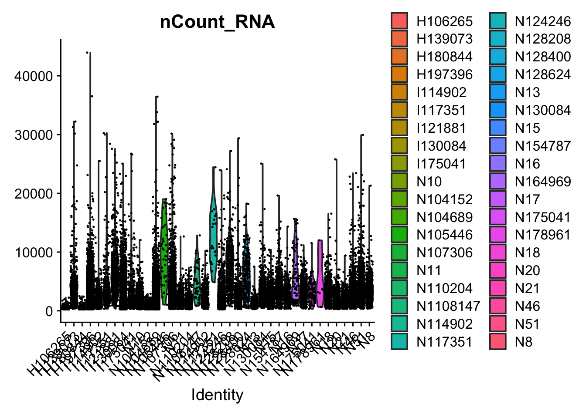

Learning about the single cell RNASeq workflow using the Seurat package and Crohn’s Disease dat from the Broad Institute Single Cell Portal
Author
Sadie Wisotsky
Published
June 12, 2026
library(Seurat)
Loading required package: SeuratObject
Loading required package: sp
'SeuratObject' was built under R 4.5.2 but the current version is
4.5.3; it is recomended that you reinstall 'SeuratObject' as the ABI
for R may have changed
Attaching package: 'SeuratObject'
The following objects are masked from 'package:base':
intersect, t
library(dplyr)
Attaching package: 'dplyr'
The following objects are masked from 'package:stats':
filter, lag
The following objects are masked from 'package:base':
intersect, setdiff, setequal, union
library(ggplot2)library(here)
here() starts at /Users/sadie/Documents/scRNASeq_learning
Part 1: Basic workflow on Colon Stromal data
I wanted to learn about single cell RNASeq and the Seurat package so I have chosen a data set that contains scRNASeq data from multiple tissue sites and compartments. This tissue has already been analyzed in this paper but I am hoping to use that as a check and as way to learn why they chose specific parameters and workflows.
For this first part, I will be following the basic workflow laid out in the Seurat tutorial for the Colon Stromal data. Further parts will expand out to the other 5 data sets and comparisons between them.
Step 1: Retrieve the data
I downloaded the data from the Broad Institute Single Cell portal here.
There are 6 main data subsets for the expression data. Samples from the colon and the ileum and then broken down by compartment by stromal, epithelial, and immune cells. For this first post, I will be focusing on the colon stromal data.
I wrote a function to create a custom Seurat object which will make it easier and more repeatable to read in the data for all 6 subsets.
create_seurat_obj <-function(path) { matrix_path <-list.files(path, ".*raw.mtx", full.names =TRUE) barcodes_path <-list.files(path, ".*.barcodes.tsv", full.names =TRUE) features_path <-list.files(path, ".*.features.tsv", full.names =TRUE) sample_name <- matrix_path |>basename() |>substr(1,6) counts_matrix <-ReadMtx(mtx = matrix_path,cells = barcodes_path,features = features_path,cell.column =1, # Usually barcodes are in the first columnfeature.column =2# Change to 1 if your gene file only has 1 column (IDs instead of Symbols) )# Create the Seurat object obj <-CreateSeuratObject(counts = counts_matrix, project = sample_name)# Tag with custom metadata obj$Tissue <- sample_namereturn(obj)}
I then create the Seurat object and look at what it is:
Warning: Feature names cannot have underscores ('_'), replacing with dashes
('-')
CO_STR
An object of class Seurat
28663 features across 39433 samples within 1 assay
Active assay: RNA (28663 features, 0 variable features)
1 layer present: counts
Can see we have 39433 samples and 28663 features. Seurat as of v5.0 allows you to store different assays in layers. Here we can see that our only layer for now is counts and our assay is RNA. I probably won’t dive deeper into this in this part but there is a vignette here for those interested.
Layers(CO_STR)
[1] "counts"
Step 2: QC
the first part of pre-processing the data is quality control. I will be following the guidelines outlined in the tutorial for now. Starting with calculating the percentage of mitochondrial (mt) contamination; a high value here is indictive of dying or low quality cells that we want to exclude from our analysis.
Then it is time to graph the metrics and visually check if our standard QC filters are appropriate:
# Visualize QC metrics as a violin plotVlnPlot(CO_STR, features =c("nCount_RNA"), group.by="orig.ident")
Warning: Default search for "data" layer in "RNA" assay yielded no results;
utilizing "counts" layer instead.

here’s where I realize that I am doing this across multiple samples where the tutorial is across a single sample. For me, it is hard to see where the cutoff for number of features should be based on this so let’s try to visualize it another way.